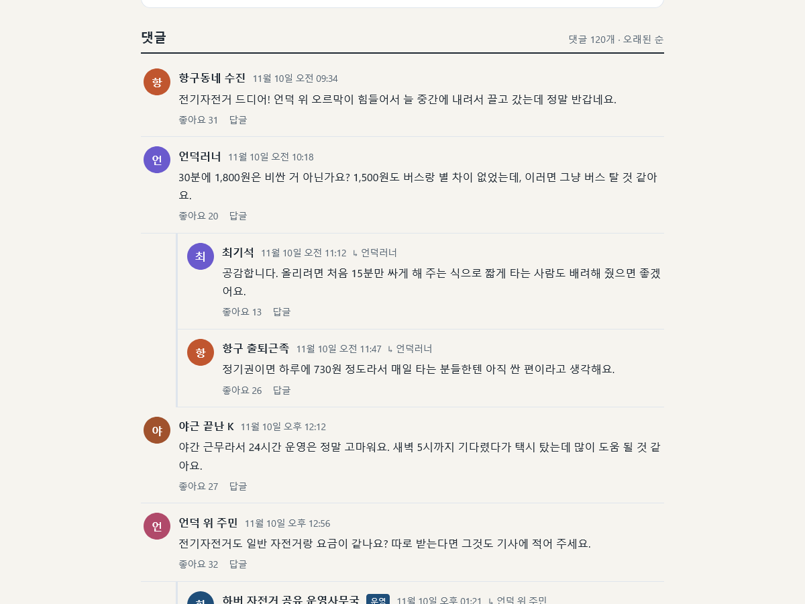
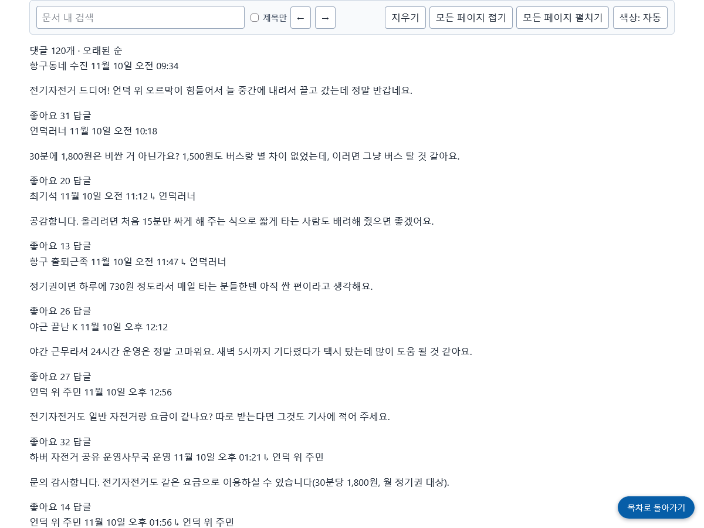

Grab All Files의 실제 출력 결과
댓글란을 끝까지 불러와 하나의 HTML로 저장한 결과(무료)
아래로 스크롤하면 이어서 불러오는 가상의 댓글란(약 120개, 답글 포함)을, 지금 열어 둔 페이지 하나만 저장하는 “현재 페이지만” 설정으로 저장했습니다. 확장 프로그램이 페이지를 끝까지 자동으로 스크롤해 불러온 댓글 120개를 모두 HTML 파일 하나에 담았습니다. 보기는 “읽기 쉽게 정리”를 골랐기 때문에 사이트의 원래 디자인 대신 본문을 같은 서식으로 정리해 저장했습니다.
출력 파일
같은 창 너비에서 나란히 비교


만든 방법
- 원본 페이지
- /samples/source/ko/comment-thread/
- 확장 프로그램
- Grab All Files(5.8.54 다음 버전. 5.8.55로 제출 예정)
- 브라우저
- Firefox 160.0 (Windows 11, headless)
- 요금제
- 무료
- 작성일
- 2026-11-16
- 설정
- 페이지: 현재 페이지만
- 모양: 읽기 쉽게 정리
- 저장 형태: 목차·검색 기능이 있는 HTML